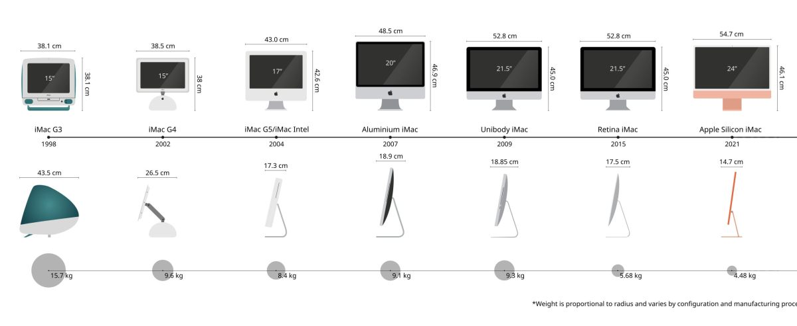

1976年4月1日、カリフォルニア州クパチーノのガレージで、スティーブ・ジョブズ、スティーブ・ウォズニアック、 ロナルド・ウェインの3人によってApple Computer Companyが設立されました。 それから50年。Appleは単なるテクノロジー企業を超え、人類の生活様式そのものを変革する文化的触媒となりました。
Appleの歴史
ガレージから世界へ。50年の革新と変革。
1976-1980
創業と初期の成功
Apple Iが666.66ドルで販売され、1977年のApple IIはカラーグラフィックスを備えた世界初の量産型個人用コンピュータとなりました。
1980年のIPOでは、フォード・モーター以来の巨額資金を調達し、一晩で300人以上の億万長者を生み出しました。

1984-1996
Macintoshの誕生と試練
1984年、GUIとマウスを採用した「Macintosh 128K」が発表されました。
しかし1985年にジョブズが解任され、その後の複雑なモデルラインアップは消費者の混乱を招き、
1997年には破産の瀬戸際まで追い込まれます。

1997-2001
奇跡の復活
ジョブズがNeXT買収を通じてAppleに復帰。「Think Different」キャンペーンと製品ラインの大幅削減により、
1998年の半透明iMacで企業イメージを一新。2001年のiPodとMac OS Xの登場で、デジタル音楽と次世代OSの時代を切り拓きました。
2007-2010
モバイル革命
2007年のiPhone発表は、スマートフォン市場を創出しました。
電話、iPod、インターネット通信機を一つのデバイスに統合した革新は、世界を変えました。
2010年のiPad発表により、タブレット市場も開拓します。
2011-2020
ティム・クック体制とサービス経済
ジョブズの死去に伴いティム・クックがCEOに就任。サプライチェーンの最適化、
App Store・Apple Music・iCloudなどのサービス部門の拡大、
Apple Watchなどのウェアラブル市場開拓により、企業の多角化を推進しました。
2020-2026
Apple Siliconと空間コンピューティング
Intel CPUから独自チップ「Apple Silicon」への移行により、省電力性能と処理能力で競合他社に決定的な差をつけました。
2024年のVision Pro発表で空間コンピューティングの時代を開き、
2026年のM5チップ搭載デバイスとApple Intelligenceの統合により、
AIのパーソナル化を実現しています。
Appleが変えた世界
Appleの真の価値は、単一の製品にあるのではなく、テクノロジーとリベラルアーツの交差点で生まれる 「ユーザー体験の簡素化」にあります。複雑な技術を、誰もが直感的に使えるシンプルなインターフェースで提供する。 これがAppleの哲学であり、50年にわたって変わることのない信念です。
2026年現在、Appleは世界最大のテクノロジー企業として、 App Storeエコシステムで1.3兆ドルの経済圏を形成し、 2030年までのカーボンニュートラル達成を目指し、 そしてAIを「人工的な知能」ではなく「パーソナルな知能」として再定義しています。